Клінічний випадок · журнал «ДентАрт» 2023 №1
Вітальна терапія пульпи
Vital pulp therapy
Трохи історії. У 1883 р. Hunter стверджував: «Навіть якщо пульпа може гноїтися і гній збільшуватися в об'ємі, я врятую її». Він прикладав суміш екскрементів горобця на оголену пульпу і досяг успіху, що наближався до 98 %. Запропонована Hunter доволі радикальна методика захисного покриття пульпи відтоді активно обговорюється і все ще є предметом розбіжностей.
Думки стоматологів розходяться щодо того, коли проводити таке лікування і чи взагалі проводити, а також щодо вибору матеріалів для прямого покриття пульпи. Радикали твердять, що довгостроковий результат лікування непередбачуваний і приречений на невдачу, тому потрібно вдатися до більш інвазивних методик лікування — пульпектомії. Консерватори вважають, що успіху можна досягти навіть при великих каріозних процесах з тривалим перебігом. Моя думка така, що за наявності сучасної матеріально-технічної бази у будь-якому випадку слід застосувати методику прямого покриття пульпи або часткову пульпотомію, а згодом, якщо знадобиться, провести повноцінне ендодонтичне лікування.
Причиною суперечок є:
- неоднозначність перед- та післяопераційного стану пульпи, оскільки основні запальні процеси можуть не мати супутніх клінічних симптомів навіть за наявності великого запального ушкодження;
- неоднозначне розуміння потенціалу оборотності ушкодження пульпи.
Усі ми чудово знаємо, що пульпа має обмежену здатність до загоєння. На відміну від шкірних покривів і тканин слизової оболонки, де порізи та рани зазвичай гояться за короткий проміжок часу, пульпа не має епітелію для закриття ушкодження. Це означає, що навіть малий дефект забезпечує доступ бактеріальної мікрофлори з ротової порожнини з можливим розвитком запалення. Але з іншого боку, запалення у пульпі — це завжди динамічний процес.
У раніше не ушкодженої пульпи, яка міститься у великій пульповій камері, особливо у молодого пацієнта, потенціал для загоєння досить високий. Навіть після утворення з'єднання з ротовою порожниною та її вмістом деякий час ще можливе відновлення. Усупереч більш раннім уявленням, запальні зміни в одній частині пульпи не будуть неминуче призводити до некрозу пульпи і можуть бути вилікувані, якщо дотриматися належних заходів для підтримки та оптимізації загоюючого потенціалу.
Клінічний приклад
Пацієнтка, 14 років, звернулася в клініку з проханням «запломбувати» зуб. На момент звернення скарг не висувала. В анамнезі короткочасні болі на солодке та холодне. Під час клінічного огляду виявлено карієс на медіальній і дистальній апроксимальних поверхнях зуба 24 (фото 2). На передопераційній інтраоральній рентгенограмі (ІРЗ) зуба 24 визначається досить глибока каріозна порожнина на медіально-проксимальній поверхні, що контактує із порожниною зуба (фото 1).
Діагноз: глибокий карієс зуба 24.
Лікування
Батькам пацієнтки виклали план дій, з яким вони з радістю погодилися. Зроблено анестезію з використанням апарата STA (Milestone Scientific, USA) та 1:200 000 Ubistezin (3M), ізоляцію робочого поля системою рабердам і видалення нальоту (фото 3). Каріозне ураження видалялося за допомогою підвищуючого наконечника Ti-Max Z95L (NSK, Nakanishi, INC) та бора на довгій ніжці 6801L.314.016 (Komet) під контролем операційного мікроскопа Zumax 2350 (Zumax Medical C0 Ltd) (фото 4, 5).
Порожнина зуба розкрита. Далі всі маніпуляції робилися з мінімальним впливом повітря. Іригація порожнини зуба проводилася гранично акуратно 2 % розчином хлоргексидину (Gluco-Chex 2 %) слабоструменево або крапельно до зупинки кровотечі або ліквореї з розкритої ділянки.
Далі були аплікація біокераміки Sure Seal Root Putty (Sure-Endo) (фото 6), закриття гібридним склоіономерним цементом Riva LC (SDI) (фото 7) і на завершення — звичайний реставраційний протокол (фото 8-10):
- травильний гель Ultra-Etch (Ultradent);
- бондингова система OptiBond FL (Sybron Endo/Kerr);
- Estelite Sigma Quick OA2, A2 (Tokoyama);
- полірування Universal Polishing Set (Komet).
Через 8 місяців було проведено повторну діагностику. Зроблено ІРЗ зуба 24 (фото 14). Вітальність зуба збережена! Явних ознак періодонтиту не виявлено. За словами пацієнтки, за весь час після лікування ні болю, ні дискомфорту вона не відчувала. Спостереження триває…
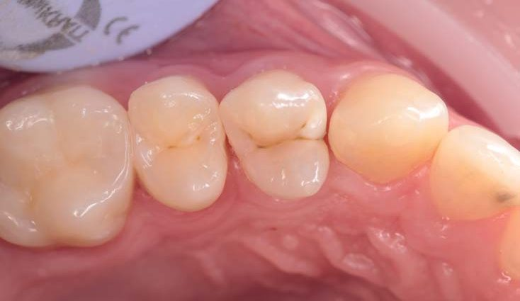
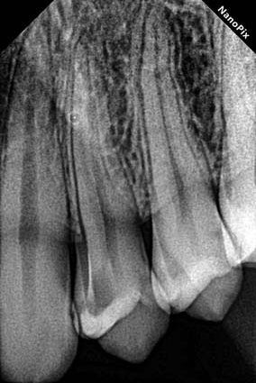
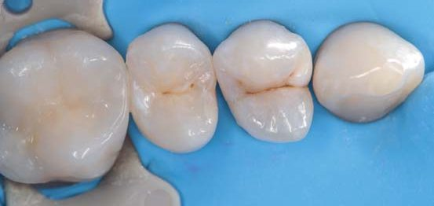
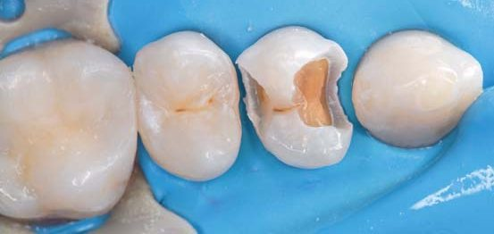
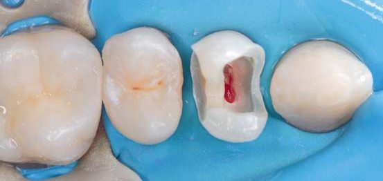
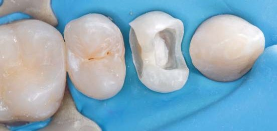
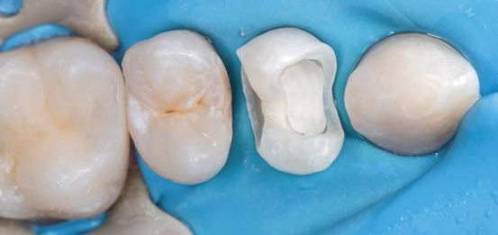
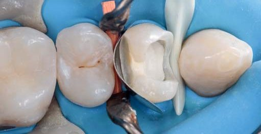
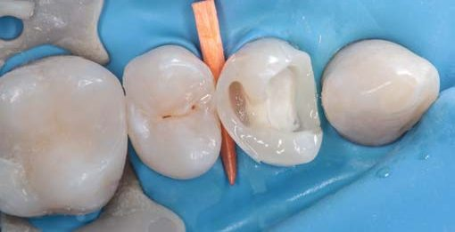
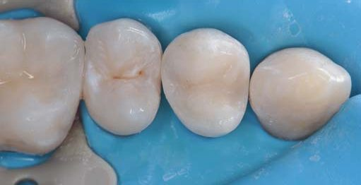
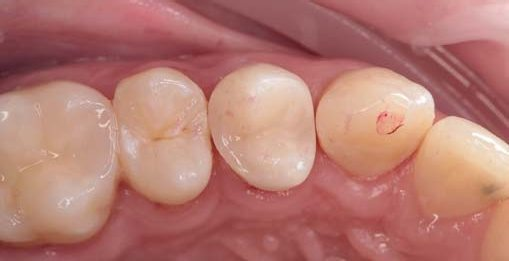
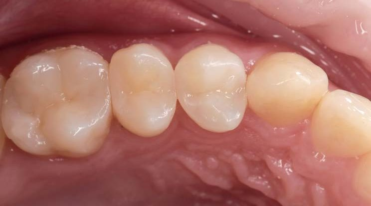
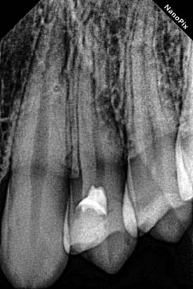
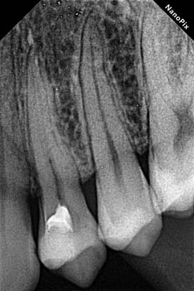
Фото 1. Передопераційна інтраоральна рентгенограма зуба 24. Фото 2. Початкова ситуація. Каріозне ураження двох проксимальних поверхонь зуба 24. Фото 3. Видалення нальоту за допомогою AirFlow, профілактичної пасти та щітки. Фото 4. Етап препарування. Фото 5. Видалення розм'якшеного дентину за допомогою екскаватора під контролем карієс-маркера SEEK (Ultradent). Фото 6. Застосування біокераміки Sure Seal Root Putty (Sure-Endo). Фото 7. Використання гібридного склоіономерного цементу RIVA LC. Фото 8. З медіально-проксимальної поверхні підняли пришийкову зону (Margin elevation), щоб уникнути деформації матриці. Фото 9. Відновлення медіальної контактної стінки. Фото 10. Завершення реставрації. Фото 11. Корекція оклюзії. Фото 12. Остаточне полірування. Фото 13. Контроль після лікування. ІРЗ зуба 24. Фото 14. ІРЗ зуба 24. Контроль через 8 місяців після лікування.
Висновки
Хочеться сказати, що світові стоматологічні асоціації, такі як Американська ендодонтична асоціація, Європейська ендодонтична асоціація, сходяться на тому, що терапія вітальної пульпи є методом вибору та кращою альтернативою пульпектомії при лікуванні глибоких каріозних уражень. Раніше вітальна терапія пульпи застосовувалася в лікуванні постійних зубів із несформованими коренями на дитячому прийомі, але тепер сфера її застосування розширюється і не обмежується віком пацієнта.
Усім миру та добра!
Література
- Боровский Е. В. КАРИЕС ЗУБОВ: Препарирование и пломбирование. – М., 2001. – 143 с.
- Эндодонтология. Второе издание. Глава 4. Бердженхолц Г., Рейт К., Хорстед-Биндслев П. Терапия при различных состояниях жизнеспособной (витальной) пульпы. – С. 62–66.
- Cvek M., Granath L., Cleaton-Jones P., Austin J. Hard tissue barrier formation in pulpotomized monkey teeth capped with calcium hydroxide for 10 minutes. J. Dent. Res. – 1987. – Vol. 66. – P. 1166–1174.